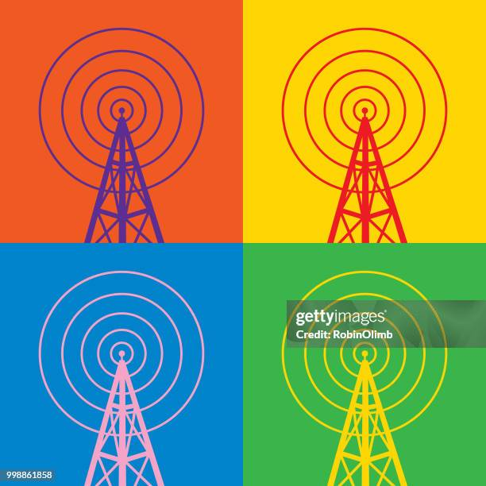

La modulación en frecuencia se desarrolló como una alternativa a AM para mejorar la calidad de la transmisión. Edwin Armstrong fue uno de los pioneros en su desarrollo. Según Haykin, FM ofrece una mayor resistencia al ruido.
En FM, la frecuencia de la portadora varía de acuerdo con la señal de información, mientras que la amplitud permanece constante. Sklar explica que esta característica reduce significativamente el efecto del ruido. Aunque requiere un mayor ancho de banda, FM proporciona una calidad superior de audio, por lo que es ampliamente utilizada en radiodifusión.


En conclusión, FM es una técnica de modulación analógica que ofrece alta calidad y confiabilidad, a costa de un mayor uso del espectro.